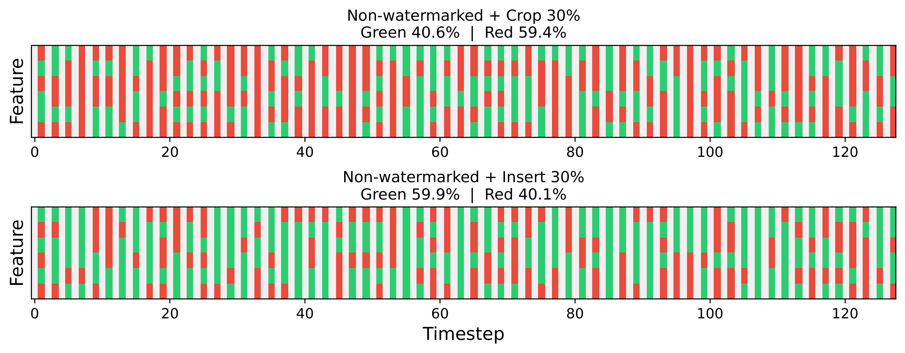
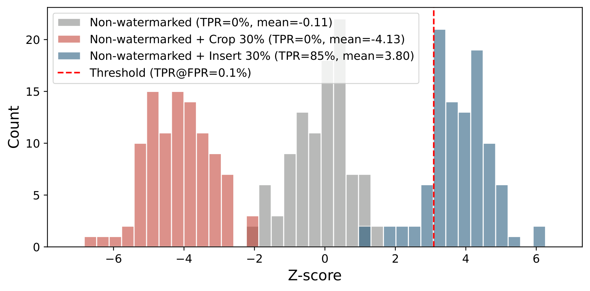
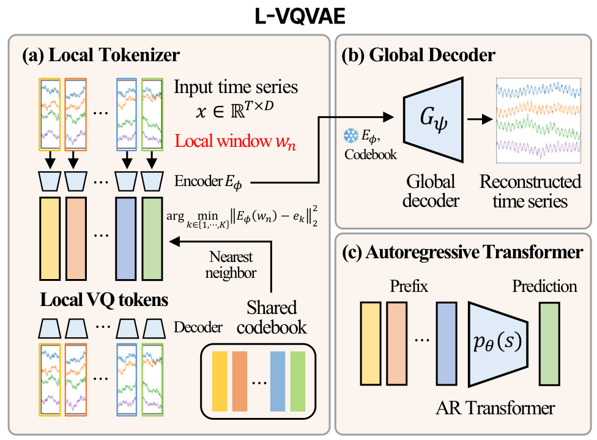
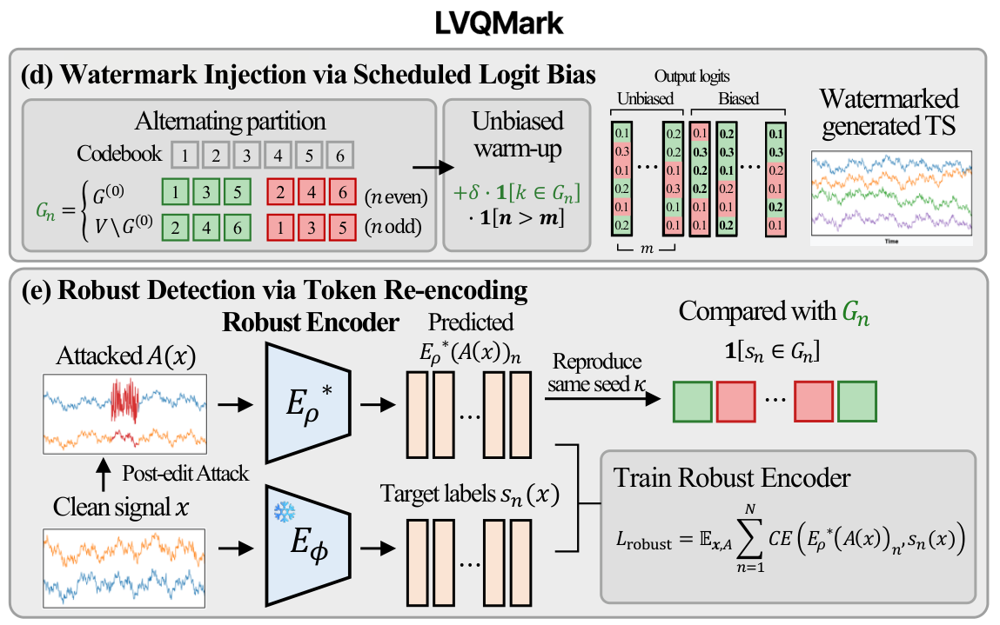
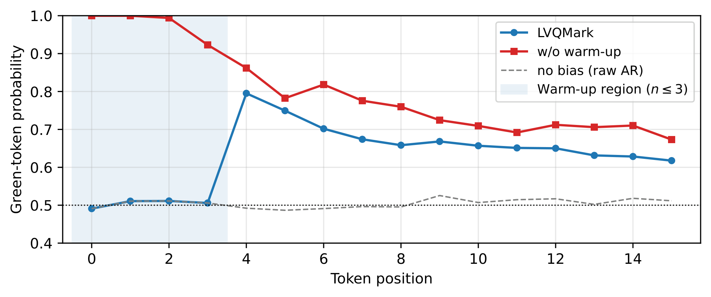
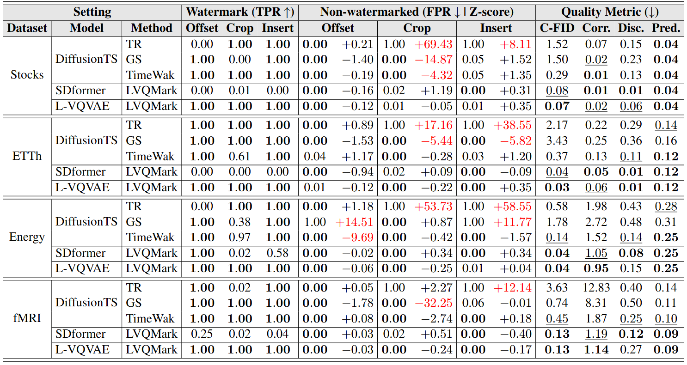
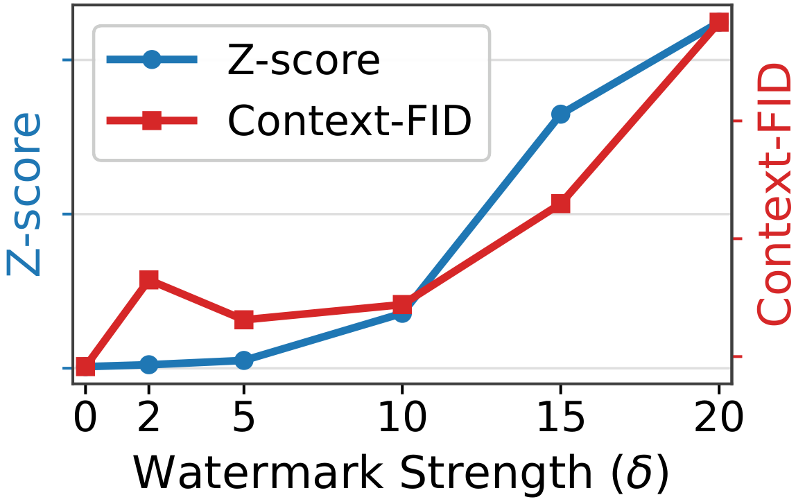
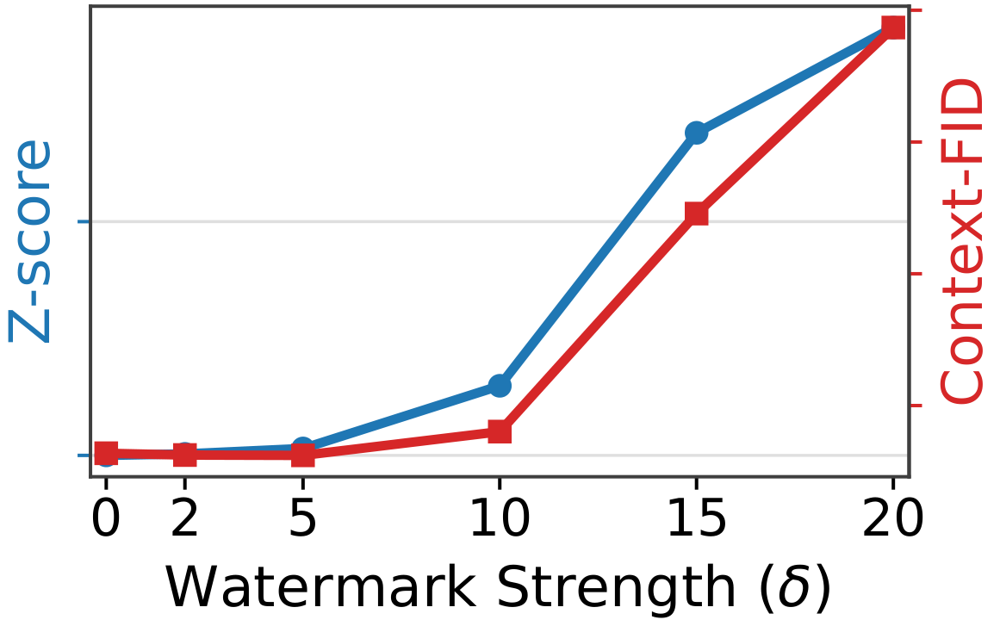
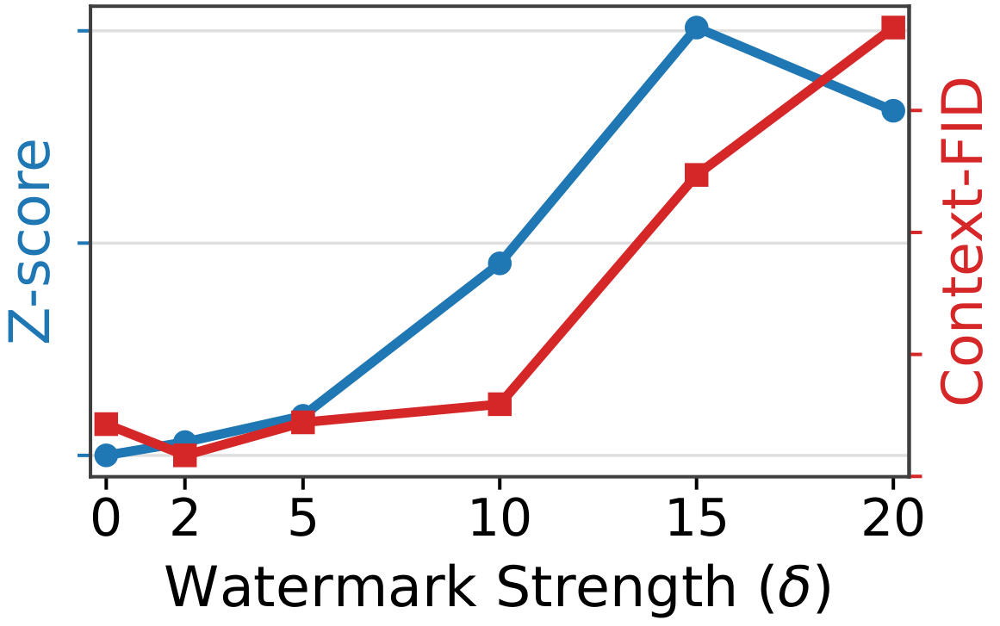
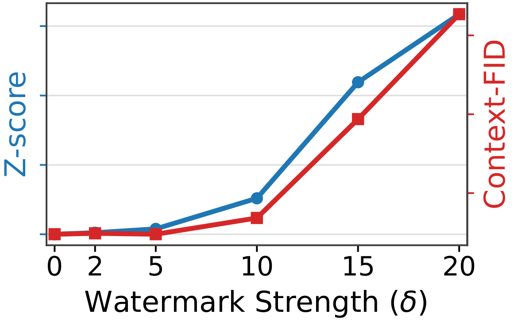

NeurIPS 2026
1Seoul National University 2Nanyang Technological University
†Equal contribution *Corresponding author
Watermarking is a central tool for provenance in generative models, yet its application to multivariate time series remains hindered by reliability failures under post-editing attacks. We show that existing detectors, which rely on globally coupled re-encoding, suffer from bidirectional drift of the null distribution: post-editing attacks can shift the z-score of non-watermarked samples in either direction, invalidating clean-calibrated thresholds. We argue that this instability is a property of the re-encoding, and that reliable detection requires each recovered unit to depend only on a bounded temporal neighborhood. Guided by this principle, we propose L-VQVAE, a generative model in which each discrete token is produced from a short contiguous window, and LVQMark, a watermarking method over this token space that combines logit-bias injection with robust re-encoding for attack-time detection. Experiments on four benchmarks spanning finance, energy, and neuroimaging show that our approach preserves generation quality while stabilizing both detection power and false-positive behavior under post-editing attacks.
We frame false-positive reliability as a re-encoding stability problem: when the detector's re-encoding map is globally coupled, an attack shifts the null distribution of the statistic on non-watermarked samples, so a clean-calibrated threshold stops meaning what it should.
L-VQVAE encodes each short sliding window into one codebook entry with a windowed cross-attention tokenizer. A temporal edit can change at most the few tokens whose windows it overlaps, while the global decoder and AR transformer stay free to model long-range structure.
LVQMark adds a red–green logit bias with an alternating partition and an unbiased warm-up, and a robust encoder maps attacked signals back to their clean token assignments for the green-ratio test.


Null drift on non-watermarked samples (TimeWak, Stocks, length 128). Crop and insert push the recovered tokens (left) and the resulting z-score (right) in opposite directions; insert crosses the clean-calibrated threshold and yields an 85% false-positive rate. The drift direction is set by the interaction between the re-encoding map and the attack, not by any watermark.

The series is cut into overlapping windows of receptive field R and stride s. A shared cross-attention encoder with a single learnable query summarizes each window into one latent, which is snapped to its nearest entry of a shared codebook. Encoder and codebook are pretrained with a local decoder that must rebuild the window from its single code, so every code fully describes its own window. A temporal edit can change at most the few tokens whose windows it overlaps.
Learnable time-step queries cross-attend to the embedded token sequence and a linear head emits the full series in one pass. It is trained with the encoder and codebook frozen. Since it is never run at detection time, it is free to model long-range structure without hurting robustness.
A decoder-only transformer models the token sequence with next-token cross-entropy, with causal attention restricted to a fixed lookback window. Sampling tokens and decoding them yields a synthetic series with no watermark.

A secret seed splits the codebook into green and red halves, and a bias δ is added to the green logits before sampling. The partition is context-independent, so a re-encoding error at one position cannot propagate; it alternates with position parity, so runs of repeated tokens cannot saturate the green ratio; and an unbiased warm-up leaves the first m positions unbiased (and excluded from the test), so near-uniform early logits do not lock in a stereotyped prefix.
A robust encoder shares the windowed cross-attention architecture but predicts a codebook index per window with a classifier. It is trained on clean/attacked pairs, with attacks drawn from a fixed family that includes the identity, to reproduce the tokens the frozen clean encoder assigns to the clean input. At detection it replaces the clean encoder; the green sets are rebuilt from the seed and the green-ratio z-score is tested against a clean-calibrated threshold.

Unbiased warm-up. Per-position green-token probability on ETTh (T = 64, δ = 10). Without the warm-up, the first positions are sampled near-deterministically from the green set and form a stereotyped prefix. LVQMark suppresses the bias for the first positions (shaded) and excludes them from the test, so early tokens follow the unbiased autoregressive distribution.

Main results (length 64, 30% attacks). TPR on watermarked samples, and FPR with mean z-score on attacked non-watermarked samples under a detector calibrated at 0.1% FPR on clean negatives, together with Context-FID, Correlational, Discriminative and Predictive scores. Best in bold, second best underlined; |z| > 3.09 in red.

Stocks

Energy

ETTh

fMRI
Watermark strength. z-score and Context-FID across the logit bias δ for length 64; δ = 0 is the non-watermarked baseline.
@inproceedings{kim2026locally,
title={A Locally Tokenized Generative Model for Robust Time-Series Watermarking},
author={Kim, Dongbin and Shin, Geonwoo and Choi, Yujin and Park, Soyeon and Lee, Jaewook},
booktitle={Advances in Neural Information Processing Systems},
volume={39},
year={2026}
}